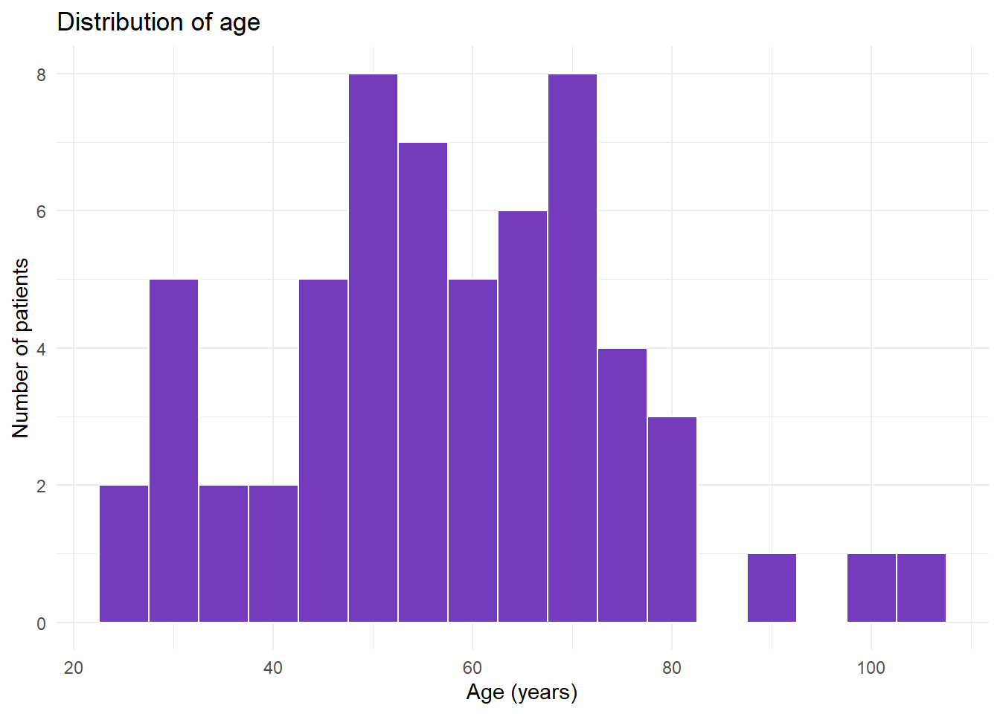
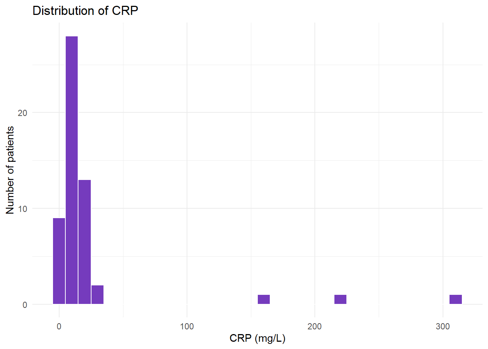
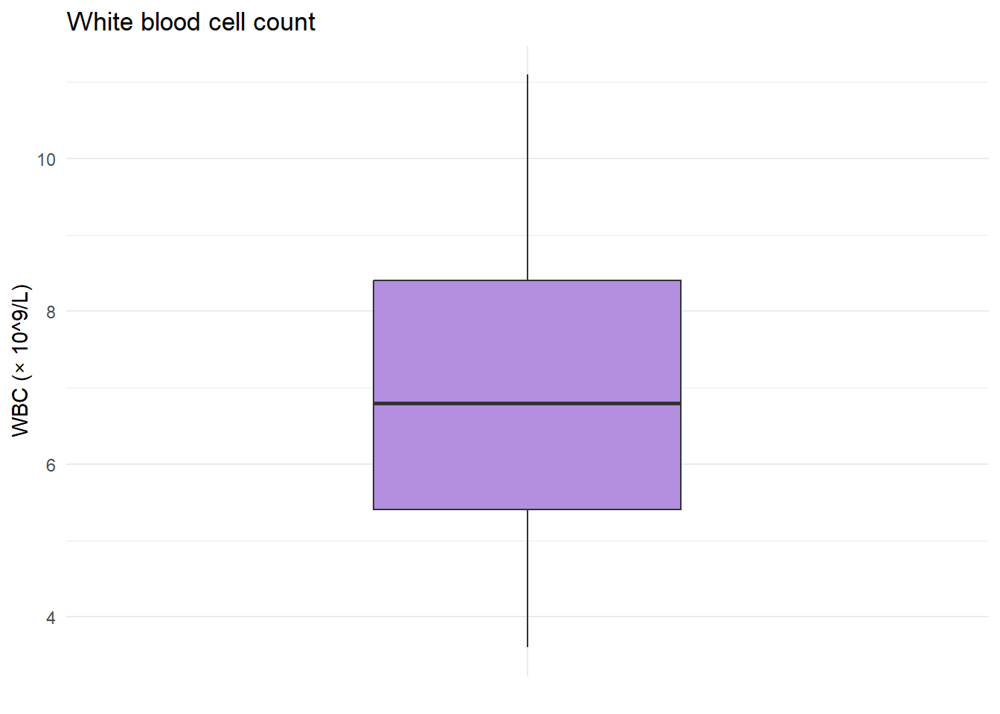
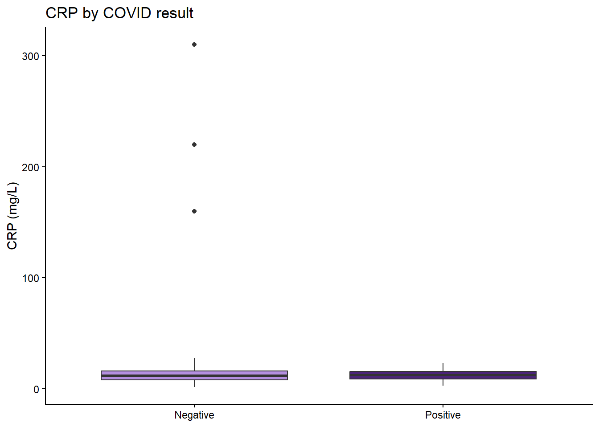
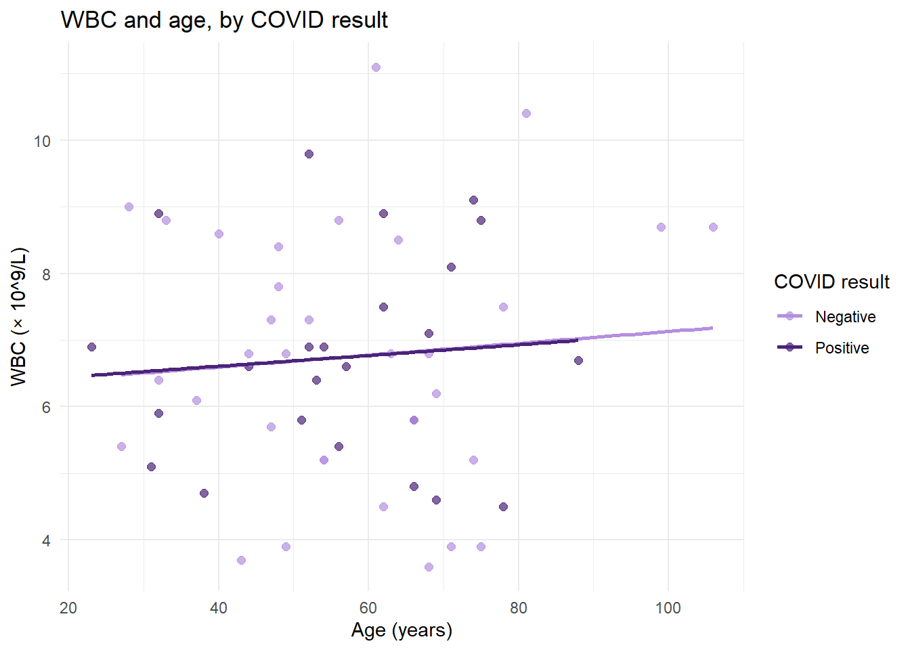

Week 2, session 2: Descriptive statistics and graphs
This is the reference copy of the workbook
This page is for reading only: you can’t run code or save answers here. To work through the activities, open week-02-session-2-workbook.qmd in RStudio. It’s in the student pack you downloaded from the week page.
Before you start
In this session you’ll describe a dataset of 60 patients who were tested for COVID-19. For each patient it records their age and sex, their test result, and four laboratory and clinical measurements: white blood cell count (WBC, × 109/L), C-reactive protein (CRP, mg/L), systolic blood pressure (BP_Sys, mmHg) and total cholesterol (mmol/L). The data are simulated.
The aim is to describe the data accurately, in numbers, tables and graphs. Whether any differences you see are bigger than chance would produce is a question for week 4, so for now: describe what you see, not what you expected to see.
Keep the Guide to R 04 open alongside. Make sure this workbook and covid_stats.csv are in your R_module project, and that the project is open.
You’ll need one new package, flextable, for Activity 9. Install it by typing this in the Console:
install.packages("flextable")
Then run the chunk below.
library(tidyverse)
── Attaching core tidyverse packages ──────────────────────── tidyverse 2.0.0 ──
✔ dplyr 1.2.1 ✔ readr 2.2.0
✔ forcats 1.0.1 ✔ stringr 1.6.0
✔ ggplot2 4.0.3 ✔ tibble 3.3.1
✔ lubridate 1.9.5 ✔ tidyr 1.3.2
✔ purrr 1.2.2
── Conflicts ────────────────────────────────────────── tidyverse_conflicts() ──
✖ dplyr::filter() masks stats::filter()
✖ dplyr::lag() masks stats::lag()
ℹ Use the conflicted package (<http://conflicted.r-lib.org/>) to force all conflicts to become errors
library(flextable)
Attaching package: 'flextable'
The following object is masked from 'package:purrr':
compose
Activity 1: Import and check the data
Run the chunk below.
covid <-read_csv("data/covid_stats.csv")
Rows: 60 Columns: 8
── Column specification ────────────────────────────────────────────────────────
Delimiter: ","
chr (3): Patient_ID, Sex, COVID_Result
dbl (5): Age, WBC, CRP_mg.L, BP_Sys, Cholesterol
ℹ Use `spec()` to retrieve the full column specification for this data.
ℹ Specify the column types or set `show_col_types = FALSE` to quiet this message.
1.1 How many observations (rows) and variables (columns) are there? Write down the type R has given each of these variables: Age, Sex, COVID_Result, WBC, CRP_mg.L, BP_Sys and Cholesterol.
Your answer:
Sex and COVID_Result are categories, so the chunk below makes them factors (as in session 1), then summarises every column. Run it.
Patient_ID Age Sex COVID_Result WBC
Length :60 Min. : 23.00 Female:25 Negative:34 Min. : 3.600
N.unique :60 1st Qu.: 47.00 Male :35 Positive:26 1st Qu.: 5.400
N.blank : 0 Median : 56.50 Median : 6.800
Min.nchar: 4 Mean : 57.43 Mean : 6.747
Max.nchar: 4 3rd Qu.: 68.25 3rd Qu.: 8.400
Max. :106.00 Max. :11.100
NAs :3
CRP_mg.L BP_Sys Cholesterol
Min. : 1.40 Min. : 83.0 Min. :2.600
1st Qu.: 7.85 1st Qu.:120.0 1st Qu.:4.475
Median : 12.20 Median :132.0 Median :5.200
Mean : 23.83 Mean :131.9 Mean :5.140
3rd Qu.: 15.60 3rd Qu.:145.0 3rd Qu.:5.725
Max. :310.00 Max. :175.0 Max. :8.000
NAs :5
1.2 What does summary() show for Sex and COVID_Result now that they are factors? For Age and WBC, write down the minimum, median, mean and maximum. For CRP_mg.L, are there missing values, or unusually high values? Is there any other value in the summary you would want to check?
Your answer:
1.3 In a short paragraph, explain why glimpse() and summary() are useful first steps before any further analysis.
Your answer:
Activity 2: Descriptive statistics for one variable
The chunk below calculates the number of values, mean, median and standard deviation of Age. Run it.
# A tibble: 1 × 4
n mean median sd
<int> <dbl> <dbl> <dbl>
1 60 57.4 56.5 17.4
2.1 Copy the code into the chunk below, twice, and change it to calculate the same statistics for WBC and for CRP_mg.L. Record all three sets of results.
# Your code here
Your answer:
2.2 For Age, are the mean and median similar or very different? What does that suggest about the shape of the age distribution?
Your answer:
2.3 For CRP_mg.L, which is larger, the mean or the median, and by how much? What does that suggest about the effect of the high values you noticed in Activity 1?
Your answer:
2.4 If you were describing CRP in a report, would you give the mean and SD, or the median and interquartile range? Why?
Your answer:
2.5 Why is na.rm = TRUE needed in these calculations, and why is it good practice to report n as well?
Your answer:
Activity 3: Counts and percentages
Run the chunk below.
covid |>count(Sex)
# A tibble: 2 × 2
Sex n
<fct> <int>
1 Female 25
2 Male 35
covid |>count(COVID_Result) |>mutate(percent =100* n /sum(n))
# A tibble: 2 × 3
COVID_Result n percent
<fct> <int> <dbl>
1 Negative 34 56.7
2 Positive 26 43.3
3.1 Write down the number of females and males, and the number and percentage (to one decimal place) of patients who tested negative and positive.
Your answer:
3.2 Describe the balance of the dataset in a sentence or two: are there more males or females, and more positive or negative results?
Your answer:
3.3 Write code in the chunk below to find the percentage of females who tested positive, and the percentage of males who tested positive. (The guide shows how to calculate percentages within groups.)
# Your code here
Your answer:
Activity 4: Summaries by group
Run the chunk below, which compares the COVID-negative and COVID-positive patients.
4.1 In a short paragraph, describe any differences between COVID-positive and COVID-negative patients in age, WBC and CRP. Which group is older on average, and which has higher inflammatory markers?
Your answer:
4.2 The standard deviation of CRP is very different in the two groups. Run the chunk below, which lists the patients whose CRP is above 100 mg/L. Which group are they in, and how does that explain the difference in SDs?
covid |>filter(CRP_mg.L >100)
# A tibble: 3 × 8
Patient_ID Age Sex COVID_Result WBC CRP_mg.L BP_Sys Cholesterol
<chr> <dbl> <fct> <fct> <dbl> <dbl> <dbl> <dbl>
1 P009 49 Female Negative 3.9 310 97 4.4
2 P013 47 Male Negative 5.7 160 140 5.7
3 P024 67 Male Negative NA 220 83 4.7
Your answer:
4.3 A CRP above 100 mg/L is very high. Suggest a biological reason why a patient who tested negative for COVID-19 might have a CRP this high. Should these patients be removed from the dataset?
Your answer:
Activity 5: Histograms and the shape of a distribution
Run the chunk below to draw a histogram of age.
ggplot(covid, aes(x = Age)) +geom_histogram(binwidth =5, fill ="#753bbd", colour ="white") +labs(title ="Distribution of age",x ="Age (years)",y ="Number of patients") +theme_minimal()

5.1 Describe the shape of the age distribution. Is it roughly symmetric, skewed to the left, or skewed to the right? Are there any gaps or extreme ages?
Your answer:
Now run this chunk, which draws a histogram of CRP.
ggplot(covid, aes(x = CRP_mg.L)) +geom_histogram(binwidth =10, fill ="#753bbd", colour ="white") +labs(title ="Distribution of CRP",x ="CRP (mg/L)",y ="Number of patients") +theme_minimal()
Warning: Removed 5 rows containing non-finite outside the scale range
(`stat_bin()`).

5.2 What does the warning about removed rows refer to? Describe the shape of the CRP distribution: where do most values lie, and how do the high values you found in Activity 4 show up?
Your answer:
5.3 Copy the age histogram code into the chunk below and try it with binwidth = 1, then with binwidth = 20. What happens to the picture? Which bin width shows the shape best?
Warning: Removed 3 rows containing non-finite outside the scale range
(`stat_boxplot()`).

x = "" gives ggplot a single, unlabelled group, so it draws one box.
6.1 Identify the median and the interquartile range (the box). Are there any points beyond the whiskers, and so any potential outliers? Is this consistent with the summary statistics for WBC from Activity 2?
Your answer:
Now run this chunk, which compares CRP between the two groups.
ggplot(covid, aes(x = COVID_Result, y = CRP_mg.L, fill = COVID_Result)) +geom_boxplot() +scale_fill_manual(values =c("Negative"="#b48fe0", "Positive"="#4b2479")) +labs(title ="CRP by COVID result",x =NULL,y ="CRP (mg/L)") +theme_classic() +theme(legend.position ="none")
Warning: Removed 5 rows containing non-finite outside the scale range
(`stat_boxplot()`).

6.2 Which group has the higher median CRP? Which group has the extreme outliers?
Your answer:
6.3 The three extreme values squash the boxes so much that it’s hard to compare them. Copy the code into the chunk below and add coord_cartesian(ylim = c(0, 40)) as a new layer (with a +), which zooms in on CRP values between 0 and 40. How do the two boxes compare now? Why is zooming better than first removing the extreme values with filter() and then drawing the boxplot?
# Your code here
Your answer:
Activity 7: A scatter plot
Run the chunk below to plot WBC against age, coloured by COVID result, with a straight line for each group.
ggplot(covid, aes(x = Age, y = WBC, colour = COVID_Result)) +geom_point(alpha =0.7, size =2) +geom_smooth(method ="lm", se =FALSE) +scale_colour_manual(values =c("Negative"="#b48fe0", "Positive"="#4b2479")) +labs(title ="WBC and age, by COVID result",x ="Age (years)",y ="WBC (× 10^9/L)",colour ="COVID result") +theme_minimal()
`geom_smooth()` using formula = 'y ~ x'
Warning: Removed 3 rows containing non-finite outside the scale range
(`stat_smooth()`).
Warning: Removed 3 rows containing missing values or values outside the scale range
(`geom_point()`).

7.1 Describe any overall trend between age and WBC. Is it clearly positive, clearly negative, or fairly flat? Are the points tightly clustered around the lines or widely scattered?
Your answer:
7.2 Do COVID-positive and COVID-negative patients occupy similar regions of the plot, or does one group tend to have higher WBC at a given age?
Your answer:
Activity 8: Group means with error bars
The chunk below calculates the mean WBC and its standard error in each group. Run it.
8.1 Write down the mean WBC and standard error for each group. Why is the standard error so much smaller than the standard deviation (1.80) you calculated in Activity 2?
Your answer:
8.2n is calculated with sum(!is.na(WBC)) rather than n(). Compare it with the group sizes in Activity 4. Why does it matter which is used, here?
8.3 Describe what the plot shows. Do the error bars overlap? In a sentence or two, explain what the error bars represent.
Your answer:
8.4 In the chunk below, show the same comparison as boxplots with the individual patients’ values added as points (the guide shows how). What can a reader see in your plot that the bar chart hides?
# Your code here
Your answer:
Activity 9: A table for a report
The chunk below turns the summary from Activity 4 into a formatted table. Run it.
9.1 Based on what you found in Activities 2 and 4, is the SD a sensible measure of the spread of CRP to put in this table? What would be better?
Your answer:
9.2 In the chunk below, write code that makes a new version of the summary with the interquartile range of CRP in place of its SD, and then turns it into a formatted table like the one above. (IQR() works like sd().)
# Your code here
Your answer:
To save your table as a Word document, store it with <- (for example my_table <- ... |> autofit()), then type this in the Console:
save_as_docx(my_table, path ="covid_table.docx")
Activity 10: Render and check
Save this workbook and click Render.
10.1 Look through the rendered page. Did every chunk produce the output you expected? Which of your graphs would you be happy to put in a report as it is, and what would you change about the others?